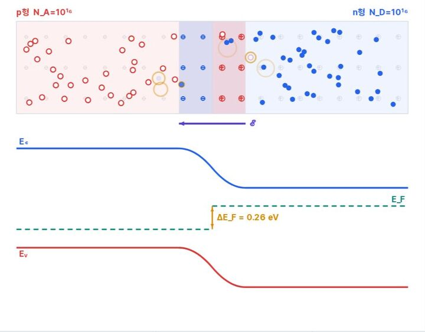
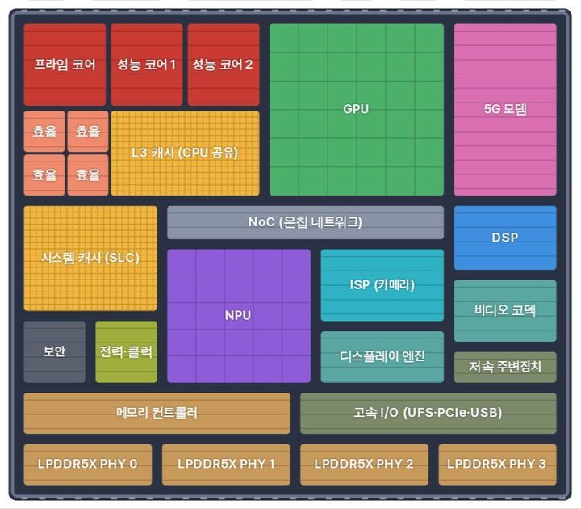
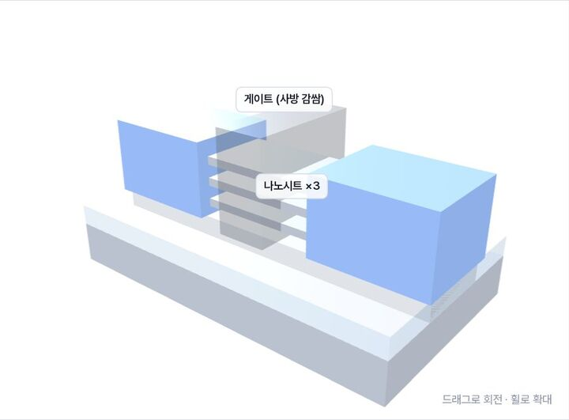
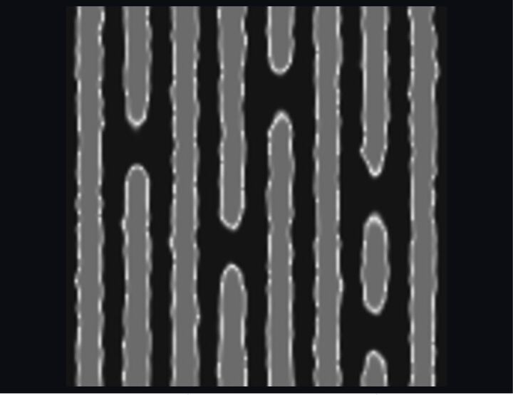
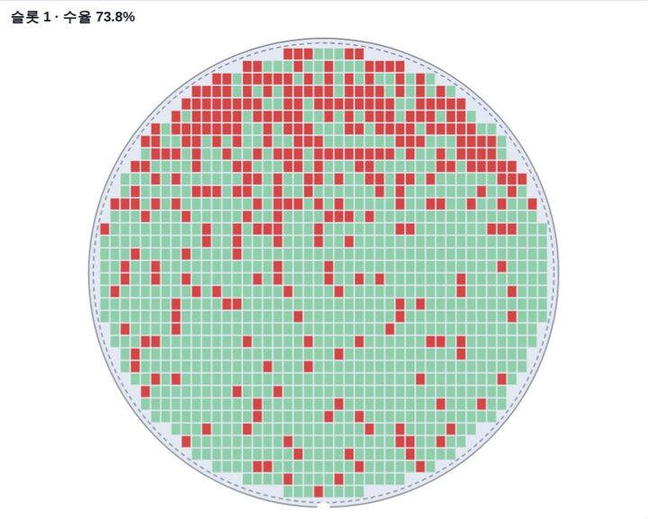
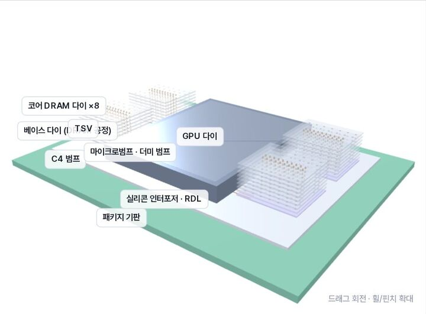

처음이라면
전자와 정공에서 트랜지스터를 만드는 공정까지
회로를 켜고, 웨이퍼에 무늬를 새기고, 칩을 쌓아 봅니다. 소자·설계·공정에서 제품과 산업까지 이어지는 한국어 교과서 서가입니다.
22권의 교과서회로 · 공정 · 구조 시뮬레이터
조건에 맞는 책이 없습니다. 다른 검색어나 분야를 선택해 보세요.
질문 하나를 골라 시뮬레이터를 움직여 보세요. 각 실험은 해당 교과서의 그 장면으로 바로 이어집니다.

DeviceBook · 소자p형과 n형을 붙이면 무슨 일이 생길까?확산에서 이온 노출, 전기장, 밴드 휨까지 한 화면에서 이어 봅니다.pn 접합이 만들어지는 순간 →
SoCBook · 설계손톱만 한 칩 안에는 무엇이 들어 있을까?3 nm급 기준 칩의 CPU·GPU·NPU·캐시 블록을 하나씩 눌러 봅니다.SB-1 다이 탐험 →
ProcessBook · 제조트랜지스터는 왜 평면에서 입체가 되었을까?평면 MOSFET에서 FinFET, GAA 나노시트까지 3D로 돌려 봅니다.트랜지스터 구조 비교 →
LithoBook · 노광같은 노광량인데 선은 왜 흔들릴까?광자 개수의 요동이 선의 가장자리를 어떻게 흔드는지 찍어 봅니다.LB-28을 광자로 찍기 →
YieldBook · 수율웨이퍼의 무늬로 불량 원인을 찾을 수 있을까?떨어진 수율의 범인을 맵과 데이터로 추리하는 게임입니다.수율 탐정: 수율 수사실 →
MemoryBook · 메모리HBM은 GPU 옆에 어떻게 쌓여 있을까?DRAM 다이 8단과 TSV, 인터포저를 한 겹씩 뜯어 봅니다.2.5D HBM 분해 모델 →